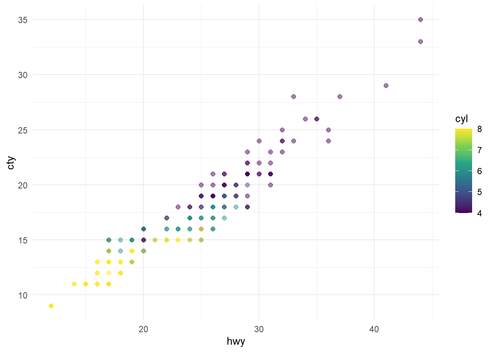

[1] 4Quarto
Quarto
Quarto é uma versão multilíngue e de última geração do R Markdown da Posit e inclui dezenas de novos recursos e capacidades, ao mesmo tempo em que é capaz de renderizar a maioria dos arquivos Rmd existentes sem modificação.
Neste tutorial, mostraremos como usar o RStudio com o Quarto. Você editará o código e o markdown no RStudio da mesma forma que faria com qualquer documento computacional (por exemplo, R Markdown) e visualizará o documento renderizado na guia Viewer enquanto trabalha.
Você pode optar por renderizar o seu .qmd como HTML ou em outros formatos, como PDF, MS Word, etc.
O Quarto é uma biblioteca R que permite a criação de documentos dinâmicos e interativos com código R e texto em um formato semelhante ao Markdown. É muito útil para criar relatórios, apresentações ou até mesmo artigos com análises de dados incorporadas.
Instalação
Para começar, certifique-se de ter o R instalado em seu computador, em sua versão mais recente. Você pode baixar a versão mais recente do R em https://cran.r-project.org/.
Certifique-se de ter instalado os pacotes tidyversee palmerpenguins:
install.packages("tidyverse")
install.packages("palmerpenguins")Baixe o documento abaixo no site para criar o seu primeiro documento .qmd.
Use o botão Render no RStudio para renderizar o arquivo e visualizar a saída com um único clique ou atalho de teclado (Ctrl+Shift+K).
Criando um documento
Agora que o pacote está instalado, vamos criar um novo documento Quarto. É importante lembrar que os arquivos Quarto possuem a extensão .qmd. Abra um novo arquivo no RStudio e salve-o com a extensão .qmd.
Sintaxe básica
Os documentos Quarto são muito semelhantes aos arquivos Markdown, mas também permitem incorporar código R que será executado e seus resultados serão exibidos no documento final. Vamos ver alguns exemplos básicos da sintaxe.
Em seguida, vamos voltar nossa atenção para o conteúdo do nosso documento Quarto. O arquivo contém três tipos de conteúdo: um cabeçalho YAML, blocos de código e texto de marcação.
Cabeçalho YAML
Um cabeçalho YAML (opcional) demarcado por três traços ( ---) em cada extremidade.
---
title: "Hello, Quarto"
format: html
editor: visual
---Quando renderizado, o title, "Hello, Quarto", aparecerá na parte superior do documento renderizado com um tamanho de fonte maior do que o restante do documento. Os outros dois campos YAML denotam que a saída deve estar em html formate o documento deve abrir no visual editorpor padrão.
A sintaxe básica do YAML usa pares chave-valor no formato key: value. Outros campos YAML comumente encontrados em cabeçalhos de documentos incluem metadados como author, subtitle, datebem como opções de personalização como theme, fontcolor, fig-widthetc. Você pode descobrir todos os campos YAML disponíveis para documentos HTML aqui . Os campos YAML disponíveis variam de acordo com o formato do documento, por exemplo, veja aqui os campos YAML para documentos PDF e aqui para MS Word.
Pedaços de código
Blocos de código R identificados com {r}opções de bloco (opcional), no estilo YAML, identificados por #|no início da linha.
```{r}
#| label: load-packages
#| include: false
library(tidyverse)
library(palmerpenguins)
```Nesse caso, o labelda parte do código é load-packages, e definimos includecomo falsepara indicar que não queremos a parte em si ou qualquer uma de suas saídas nos documentos renderizados.
Além de renderizar o documento completo para visualizar os resultados dos blocos de código, você também pode executar cada bloco de código interativamente no editor do RStudio clicando no  ícone ou no atalho de teclado (⇧⌘⏎). O RStudio executa o código e exibe os resultados embutidos em seu arquivo ou no console, dependendo de sua preferência.
ícone ou no atalho de teclado (⇧⌘⏎). O RStudio executa o código e exibe os resultados embutidos em seu arquivo ou no console, dependendo de sua preferência.
Títulos e texto
# Título 1
## Título 2
### Título 3
Texto normal.
Use o modo “Visual” para facilitar o seu trabalho!
Código R
O código R é inserido entre blocos de código cercados por três acentos graves (```). O resultado da execução do código será mostrado abaixo do bloco de código.
```{r} # Exemplo de código R
x <- 1:5 mean(x)
Você pode adicionar opções ao código executável como este:
Tabelas
Você também pode criar tabelas:
| Coluna 1 | Coluna 2 | Coluna 3 |
|---|---|---|
| A | 1 | x |
| B | 2 | y |
| C | 3 | z |
Gráficos
Você pode incorporar gráficos gerados pelo R diretamente no documento usando o bloco de código R.
A opção echo: false desativa a impressão do código (somente a saída é exibida).
library(ggplot2)
ggplot(mpg, aes(x = hwy, y = cty, color = cyl)) +
geom_point(alpha = 0.5, size = 2) +
scale_color_viridis_c() +
theme_minimal()
ggplot(mpg, aes(x = hwy, y = cty, color = displ)) +
geom_point(alpha = 0.5, size = 2) +
scale_color_viridis_c(option = "E") +
theme_minimal()

Inserindo listas
sdf
sdf
sdf
Inserindo lista numerada:
Linha 1
Linha 2
Linha 3
Inserindo referências
Você pode também adicionar referências (Devleesschauwer et al. 2022) e rodapés1 no seu documento com facilidade.
Conclusão
O Quarto é uma ferramenta poderosa para criar relatórios e documentos interativos com análises de dados incorporadas. Você pode combinar texto formatado, código R e gráficos em um único documento, facilitando a comunicação e a apresentação de suas análises.
Este tutorial abordou apenas o básico do Quarto, mas há muito mais recursos para explorar. Você pode personalizar a aparência do documento, adicionar interatividade e muito mais. Para saber mais detalhes e recursos avançados, você pode consultar a documentação oficial do pacote Quarto.
Espero que este tutorial tenha sido útil para começar com o Quarto em R. Divirta-se explorando essa ferramenta para criar documentos dinâmicos e interativos!
References
Devleesschauwer, Brecht, Paul Torgerson, Johannes Charlier, Bruno Levecke, Nicolas Praet, Sophie Roelandt, Suzanne Smit, Pierre Dorny, Dirk Berkvens, and Niko Speybroeck. 2022. Prevalence: Tools for Prevalence Assessment Studies. https://cran.r-project.org/package=prevalence.
Footnotes
Rodapé 1↩︎